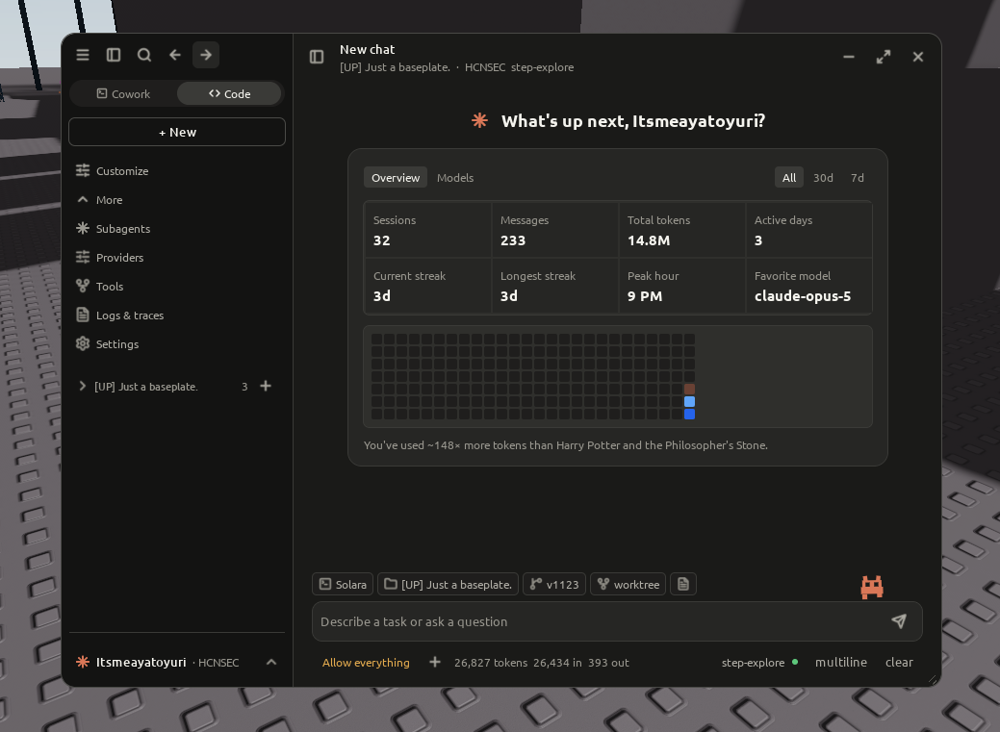
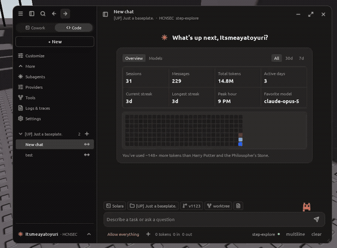

The Universal AI Agent
for Roblox.
A full autonomous AI agent that runs directly inside any Roblox client. Streaming multi-model intelligence, parallel tool execution, recursive subagents, and deep game inspection.
Built for Real In-Game Autonomy
Experience low-latency streaming chat, active multi-session management, and comprehensive token accounting right from the in-game overlay.

Real-Time Token & Activity Tracking
Every turn automatically records prompt and completion tokens, active day streaks, hourly usage heatmaps, and favorite model metrics without relying on any external analytics backend.
- Zero telemetry leaks — all usage stats computed locally on the client
- Active day streaks & GitHub-style activity contribution calendar
- Live model distribution and token consumption benchmarks
Live Autonomous Agent Interaction
Watch Project UAI reason through multi-step objectives, inspect live game instances, execute Luau sandbox code, and stream responses with real-time thinking traces.
- Fluid streaming chat with live Markdown & codeblock syntax
- Foldable activity blocks with tool arguments, outputs, and diffs
- Non-blocking concurrency across multiple active conversations

Engineered Without Compromise
A modular, production-grade Luau architecture that decouples agent orchestration from visual rendering.
True Autonomous Loop
Multi-round tool execution, automatic context compaction with progressive summarization, intelligent retry backoff honoring Retry-After, and seamless provider fallback.
Subagents & Delegation
Dispatch isolated subagents concurrently. Each child maintains dedicated step and time budgets, tool permission gates, and can be queried for follow-up inspection without polluting the parent turn.
Universal Providers
Zero vendor lock-in. Built-in presets for OpenRouter, Anthropic (Messages & OpenAI endpoints), OpenAI, Google Gemini, and custom OpenAI-compatible endpoints like local Ollama or vLLM relays.
Multi-Device Responsive UI
Adapts fluidly across platforms: floating window on desktop, bottom sheet on mobile, full dock on tablet, and centered panel on console. 44px touch targets on touch screens and 28px on pointer.
Claude Code Wire Identity
Inference requests mimic the official Claude Code CLI headers on compatible endpoints, while cleanly providing dedicated OpenRouter attribution headers when connecting to OpenRouter.
Gated Security & Permissions
Risk-tiered tool execution. Dangerous operations (remote firing, filesystem writing, raw Luau evaluation) can be prompted or auto-allowed with granular session permission controls.
60+ Tools Across 13 Groups
Equipped with engine-level instrumentation to interact with any place, character, or network remote.
Official OpenRouter Integration
Project UAI sends native app attribution headers with every request sent to OpenRouter. This gives users transparent usage analytics, public leaderboard tracking, and seamless model switching across hundreds of frontier models.
View Live OpenRouter Page →Up and Running in 30 Seconds
No external DLLs, builds, or dependencies required. Load directly into your client.
Execute Loadstring
Run the single distribution script in your executor or embed it into your development environment script.
Configure Provider
Press Ctrl + \ (or tap the hamburger menu on mobile), navigate to Providers, and enter your OpenRouter, Anthropic, or OpenAI API key.
Start Prompting
Ask questions, inspect memory, analyze game remotes, or dispatch parallel subagents to complete complex tasks.